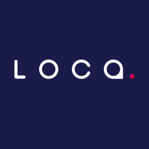
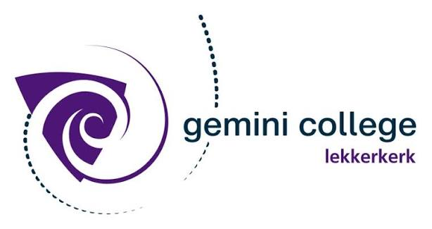

Damian van Loon
Helpdeskmedewerker en IT-engineer in wording met een passie voor Linux, Docker, netwerken en smart home automatisering. Bouwt en beheert een homelab om enterprise-technologieën in de praktijk te testen.
Netwerk Architectuur
Klik op een element in het schema om de details en actieve services op dat apparaat te bekijken.
Geen element geselecteerd
Klik op een van de servers of netwerkcomponenten in de tekening om specificaties, IP-adressen en draaiende services te zien.
Projecten
Een overzicht van concrete systemen en infrastructuren die ik zelfstandig heb gebouwd en onderhouden.
Homelab
Een geavanceerde en redundante test- en productieomgeving in mijn meterkast, ingericht met Proxmox VE, Docker en op maat gemaakte 3D-geprinte hardware.
De Setup & Architectuur
Een dual-node lab bestaande uit een Raspberry Pi 5 (Ubuntu Server) en een HP Thin Client T620 (Proxmox VE hypervisor) fysiek gemonteerd in de meterkast met 3D-geprinte brackets. De services draaien in Proxmox VM's/LXC-containers en Docker.
Integratie & Automatisering
Centraal netwerkbeheer via een Nginx Reverse Proxy met automatische SSL-certificaten. Services praten onderling via API's en Docker-netwerken, met een SambaNAS-configuratie op de Pi 5 die shares levert aan Proxmox-nodes.
Redundantie & Back-ups
Uitgevoegd met een dubbele Pi-hole (DNS failover) zodat het internet niet uitvalt bij onderhoud. Voorzien van cross-monitoring via Uptime Kuma en automatische, versleutelde off-site backups naar Oracle Cloud en Tuxis PBS (3-2-1 back-upstrategie).
Geautomatiseerde Media Pipeline & SambaNAS
Een gecentraliseerde netwerkopslag (NAS) en geautomatiseerde download- en mediapipeline draaiend op een energiezuinige Raspberry Pi 5.
De Architectuur
Gedistribueerd over twee fysieke machines. De Raspberry Pi 5 fungeert als Docker-host voor de opslag (SambaNAS) en streaming (Plex/Jellyfin), terwijl de HP Thin Client (Proxmox VE) de management- en automatiseringsstack host.
Integratie & Automatisering
De automatiseringstools (Sonarr/Radarr) communiceren direct via API's met indexers (Prowlarr), verzoeken (Overseerr) en downloaders (qBittorrent/SabNZB) op de Pi 5 om downloads volautomatisch te starten, te hernoemen en te sorteren.
Netwerk & Beveiliging
Veilige netwerkroutering waarbij alle download-containers via Docker-netwerken door een VPN-container(Gluetun) met actieve kill-switch worden geleid om datalekken te voorkomen.
3D-Geprinte Mini Arcade Machine
Een zelfgebouwde bartop arcade machine aangedreven door een Raspberry Pi met Batocera en premium Sanwa arcade-besturing.
Het Concept
Een compact tafelmodel arcadekast, geprint in PLA, uitgerust met een authentiek 4:3 LCD-scherm, geïntegreerd 2.1-geluid en sfeervolle LED-verlichting.
De Elektronica
Raspberry Pi 4B, Zero Delay USB encoder, audioversterker met actieve subwoofer en een dual-voedingssysteem voor stabiele stroomvoorziening.
Het Bouwproces
Klik op deze kaart om de volledige handleiding en stap-voor-stap foto's van de fysieke montage en bedrading te bekijken.
Vaardigheden & Loopbaan
Een overzicht van mijn technische vaardigheden, professionele achtergrond en studie.
Kernvaardigheden
Besturingssystemen
- Linux (Ubuntu Server, Debian)
- Windows Server & Client
- ESPHome / Embedded firmware
Netwerken & Security
- TCP/IP, IP-adressering & Subnetting
- DHCP & DNS (Dual Pi-hole setup)
- VPN (Tailscale / WireGuard)
- Nginx Proxy Manager proxying
Virtualisatie & Containers
- Docker & Docker Compose
- Portainer containerbeheer
- Proxmox VE (LXC & VM)
Automatisering & Tools
- YAML (Home Assistant & Dashboards)
- Bash scripting & Linux CLI
- Uptime Kuma cross-monitoring
Werkervaring & Opleiding

Mbo ICT System Engineer (Niveau 4)
ROC Midden Nederland (BBL)Versnelde Leerweg: Vanwege inzet en goede resultaten ben ik na een half jaar in het eerste jaar direct overgezet naar het tweede leerjaar. Hiermee sla ik een heel studiejaar over en behaal ik mijn diploma in twee jaar in plaats van drie.



Helpdeskmedewerker (Fulltime)
Nedsoft B.V. / Loca / NedtrackVerantwoordelijk voor klantenondersteuning en troubleshooting (1e en 2e lijns support) voor GPS-tracking hardware en rittenregistratiesoftware. Analyseren van data, oplossen van connectiviteitsproblemen en bijdragen aan productverbetering op basis van feedback van gebruikers.
Mbo Medewerker Beheer ICT (Niveau 3)
ROC Da Vinci College